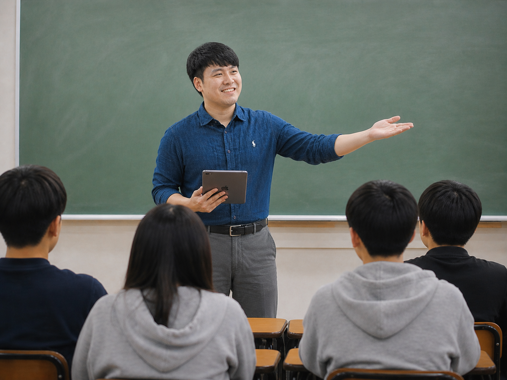

Learning Support and Inclusive Education specialist with 15 years of classroom experience, published research, and EdTech expertise — currently supporting diverse learners at Korean International School Ho Chi Minh City, Vietnam.

Where learning environments designed for all meet attentive, personalised support for each — inclusive education blossoms into culture.
That intersection — inside the classroom and beyond — is what I hope to build, together.
I am Andrew (Hooseok) Lee, a Learning Support and Inclusive Education specialist with over 15 years of experience across both national and international school settings. My practice is grounded in evidence-based SEN provision, differentiated instruction, and a deep commitment to making learning genuinely accessible for every student.
At Korean International School Ho Chi Minh City, I design and lead the school's learning support program — working closely with classroom teachers, subject specialists, school counsellors, nurses, career advisors, administrators, and support staff to embed inclusive practice into the everyday fabric of school life. This cross-functional collaboration has been central to my work throughout my career, extending beyond the school gate to encompass universities, government agencies, local authorities, and businesses.
Alongside my practice, I lead domestic and international research on attitudes toward inclusive education — grounding everything I do in evidence and connecting classroom reality with the broader field.
Open to conversations about Learning Support and SEN roles at international schools, research collaboration, and inclusive education consulting.